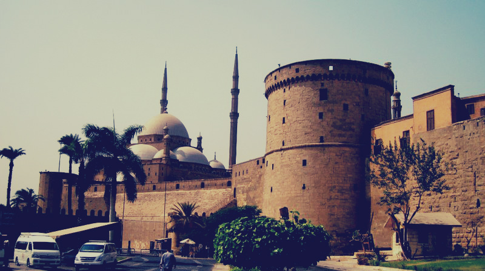

شرع صلاح الدين الأيوبي في تشييد قلعة فوق جبل المقطم في موضع كان يعرف بقبة الهواء. ولكنه لم يتمها في حياته. وإنما أتمها السلطان الكامل بن العادل. فكان أول من سكنها هو الملك الكامل واتخذها داراً للملك. واستمرت كذلك حتى عهد محمد علي باشا. و في الضلع الغربي للقلعة، يوجد الباب المدرج وفوقه كتابة تشير إلي بناء هذه القلعة، ونصه ” بسم الله الرحمن الرحيم، أمر بإنشاء هذه القلعة الباهرة، المجاورة لمحروسة القاهرة التي جمعت نفعاً وتحسيناً وسعة على من التجأ إلى ظل ملكه وتحصيناً، مولانا الملك الناصر صلاح الدنيا والدين، أبو المظفر يوسف بن أيوب محيي دولة أمير المؤمنين في نظر أخيه وولي عهده، الملك العادل سيف الدين أبي بكر محمد خليل أمير المؤمنين، علي يد أمير مملكته، ومعين دولته، قراقوش ابن عبد الله الملكي الناصري في سنة تسع وسبعين وخمسمائة “. و حفر صلاح الدين في القلعة بئراً يستقي منها الجيش وسكان القلعة إذا مُنع الماء عنها عند حصارها. وهي أعجب ما تم من أعمال لأن البئر محفور في الصخر بعمق 90 متر من مستوي أرض القلعة، وهذا يتطلب جهد كبير في ذلك الوقت. تعتبر قلعة صلاح الدين الأيوبي بالقاهرة من أفخم القلاع الحربية التي شيدت في العصور الوسطى فموقعها استراتيجي من الدرجة الأولى بما يوفره هذا الموقع من أهمية دفاعية لأنه يسيطر على مدينتي القاهرة والفسطاط، كما أنه يشكل حاجزاً طبيعياً مرتفعاً بين المدينتين كما أنه بهذا الموقع يمكن توفير الاتصال بين القلعة والمدينة في حالة الحصار كما أنها سوف تصبح المعقل الأخير للاعتصام بها في حالة إذا ما سقطت المدينة بيد العدو. مر بهذه القلعة الشامخة الكثير والعديد من الأحداث التاريخية حيث شهدت أسوارها أحداثاً تاريخية مختلفة خلال العصور الأيوبية والمملوكية وزمن الحملة الفرنسية على مصر سنة 1798م، وحتى تولى محمد علي باشا حكم مصر حيث أعاد لها ازدهارها وعظمتها. كان السلطان الناصر صلاح الدين يوسف بن أيوب أول من فكر ببناء القلعة على ربوة الصوة في عام 572 هـ/1176م حيث قام وزيره بهاء الدين قراقوش الأسدي بهدم المساجد والقبور التى كانت موجودة على الصوة لكي يقوم ببناء القلعة عليها حيث قام العمال بنحت الصخر وإيجاد خندقاً اصطناعياً فصل جبل المقطم عن الصوة زيادة في مناعتها وقوتها.